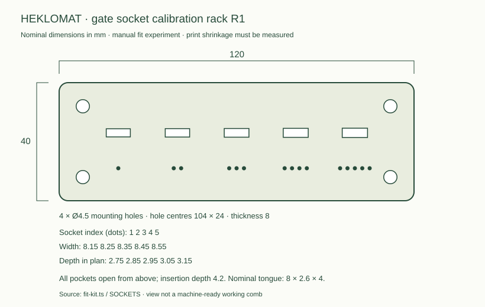

The gate-wheel route has been retired as the main development path. Read the critical design review first. This small kit only compares the old printed gate and hook geometry. It does not demonstrate the selected retained-stitch mechanism, and is not required for it. The full-machine reference files have known mechanical gaps and are not a production build release.
Eight pieces from six STL files. Use 100% scale and your actual printer/nozzle/material profile. The STLs have their bottoms at Z=0. Inspect supports and bed adhesion in the slicer; the small gate tongues and tall hooks may need brims or a different orientation. No G-code is supplied.
| Part ID | Qty | Envelope mm | Material | Layer mm / walls / infill | CAD estimate g |
|---|---|---|---|---|---|
| gate-6 | 1 | 10.6 × 9.0 × 13.5 | PETG | 0.2 / 5 / 60% | 0.7 |
| gate-7 | 1 | 10.6 × 9.0 × 13.5 | PETG | 0.2 / 5 / 60% | 0.6 |
| gate-7p5 | 1 | 10.6 × 9.0 × 13.5 | PETG | 0.2 / 5 / 60% | 0.6 |
| gate-8 | 2 | 10.6 × 9.0 × 13.5 | PETG | 0.2 / 5 / 60% | 1.0 |
| crochet-hook | 2 | 5.0 × 4.8 × 61.1 | PETG | 0.12 / 6 / 100% | 2.0 |
| fit-rack-r1 | 1 | 120.0 × 40.0 × 8.0 | PETG | 0.2 / 4 / 30% | 32.7 |
Rough model estimate: 37.6 g, excluding supports/brims/purge and failed prints. At the retrieved PETG reference of 158 NOK/kg this is 5.93 NOK of consumed filament before allowances. This is not the print-job charge. Slicing and your friend's rates are needed for that.
Sum the slicer's complete material grams for every plate × filament NOK/kg ÷ 1000, then add machine hours × the operator's hourly rate, setup/labour, and shipping. Add tax only if the entered rates exclude it. Keep reprint allowance separate. Buying whole spools costs more than consumed filament if no stock is available.

Use millimetres and 100% scale. Print one rack, one each of the 6 / 7 / 7.5 mm gates, two 8 mm gates, and two hooks. Mark each gate with its throat width. The hook is a finish experiment, not an established replacement for a metal hook.
Check: Preview every layer for unsupported islands. The rack sockets face upward. Record support/brim grams and print time from the slicer.
Remove strings without enlarging the sockets. One dot is 8.15 × 2.75 mm; each next socket increases both dimensions by 0.10 mm. All sockets are 4.2 mm deep. Try the SAME gate in all five sockets; the gate tongue is nominally 8 × 2.6 × 4 mm below its shoulder.
Check: Record measured tongue size and the smallest socket that seats by gentle finger pressure without rocking. Do not force a press fit. This test measures fit, not stitch capture.
Clamp the rack to a bench using soft jaws, leaving the sockets accessible. Optional mounting holes are Ø4.5 mm on a 104 × 24 mm rectangle; choose screw length for your actual backing board. Insert one gate in the selected socket. The loose fit is intentional; keep it seated by hand during the experiment.
Check: The rack stays fixed and the gate shoulder touches its top face. No motors or electrical parts are used.
Use a hand-crocheted swatch of the intended yarn. Manually place one stitch in an 8 mm gate; guide the hook through while holding the fabric. Try a yarn-over and draw-through by hand. Narrower gates are comparison samples: the existing 3 mm hook + two 2.1 mm yarn legs + 0.6 mm margin require 7.8 mm, so narrower variants are not expected to pass that assumed stack.
Check: Record snagging, loop escape, splits, hook damage, yarn and hook measurements. Stop if yarn frays or the hook bends. Successful manual manipulation does not establish automatic crochet.
Save printer model, nozzle, material, slicer profile, project file, grams, time, the fit measurements and a close-up video of the experiment. Repeat on at least 50 loops, recording failures rather than changing the result after the fact.
Check: These results characterise the old gate concept only. They do not qualify the selected metal-tool, retained-stitch replacement. Follow the critical review for that development sequence.
PETG (or use your friend's existing PETG), the actual project yarn, and a clamp. Borrow a caliper and basic finishing tools if possible. Optional Ø4 mm mounting screws require a length chosen for your backing board. No motor, controller or power supply is needed for this experiment. Purchased metal hook comparison is optional; measure it before designing a holder.
Printer model, build volume, nozzle, material/brand, slicer name/version and saved project, each plate's quantity/grams/hours, print-job rate, measured tongue and socket dimensions, chosen fit, and a short test video. Use quote-template.json or simply send the slicer summary with the part counts. The workbench imports completed JSON plate quotes.
The actual CAD cutters put six platter holes on radius 102 mm and six hub holes on radius 53 mm: 49 mm radial mismatch. The legacy fit checks omit this pair.
Redesign both around the selected bearing and shared bolt pattern, including a centring register, stack height and fastener engagement.
The full comb needs 10 gates and the wheel 8; the old registry supplies 12. At least 18 installed gates are needed, before spares.
Use 18 installed + 2 spares in the provisional full-machine quote; choose the final throat only after yarn trials.
Even the upper pocket reaches only Z=12.24 mm inside the 14 mm tall comb. Only the small ejector holes reach the top; an 8 × 2.6 mm gate tongue cannot enter from above.
Use the new open-top calibration rack for initial measurements. Redesign the working comb sockets before assembly.
The hook shaft is modelled along local Z, then mounted with a 90-degree X rotation. Its direction is 90.0 degrees from the P insertion axis. Translating P therefore sweeps the hook sideways rather than driving the tip along its shaft.
Redesign hook and collet together around a shared tool centreline; verify the tip path, tool closure and collision clearance through the actual stitch cycle. Do not fake this movement in an animation.
bore() creates a centred cutter, while platter and hub bodies are extruded upward from Z=0. The platter cutter ends at Z=8 inside its 10 mm body; the hub cutter ends at Z=7 inside its 8 mm body. Their bolt passages retain 2 mm and 1 mm roofs. These solids still pass watertight-mesh checks.
Retire these interfaces with the wheel design. For any reused part, test a full fastener/tool insertion path against actual CSG and measured hardware.
A roughly 100-stitch round exceeds the ten comb positions. V1 has no demonstrated transfer sequence that keeps each future insertion point located until the next round reaches it. A mesh or timed animation cannot fill this gap.
Replace passive reacquisition with retained stitch positions. Prove insertion, loop formation and transfer on a short needle bed before designing circular storage.
The V1 hook is permanently open. Its dancer is a passive arm; there is no measured yarn-tension loop or commanded slack take-up. Their adequacy for repeated draw-through is an untested assumption.
Evaluate a polished metal compound tool with controlled closure and rotation, plus measured feeding/retraction. Establish tool/yarn compatibility physically before freezing dimensions.
The prior one-percent completion figure is a product of subjective stage probabilities. Timing is programmed into a simulation. Neither is a measured chance or speed of this machine.
Record trial counts, failure modes, actual cycle times and recovery outcomes. Report assumptions explicitly; do not use simulated timing or invented odds as a purchasing argument.
The existing tooth and wheel hub have no shared mounting contract. Shaft supports, positive torque transfer, pulley geometry and belt tensioning are not fully modelled.
Specify bought shaft/bearings/pulleys, CAD each support and retainer, then check the swept volume against the comb.
The legacy hardware picture uses rail/motor envelopes. It does not contain a complete Z/R/P bearing, lead-nut, coupling, endstop and carriage attachment chain. The yarn finger also needs its actuator and mount.
Freeze exact supplier drawings and model every load-bearing interface before issuing assembly instructions.
HKP/1 is a protocol and simulated transport. The repository does not provide tested ESP32 motion firmware, a complete wiring drawing, homing, or an integrated detector.
Implement and bench-test homing, travel limits, sensor faults, stop/reset behaviour and one measured stitch cycle. Size the DC power system from the selected loads.
Rendered motion and watertight meshes do not demonstrate stitch capture, loop retention, draw-through, round transfer, increases or colour changes.
Record fit trials, then a single stitch, 50 consecutive stitches, a closed round, increases, one complete single-colour hat, and finally colour changes.
The owner confirmed Bambu Lab X1 Carbon. A 0.4 mm nozzle is assumed, not confirmed. Material brand, shrinkage, supports and physical fit remain unqualified. The 256 mm bed also has a front-left exclusion in its default profile.
Slice and inspect each plate using explicit profiles and retain support-inclusive grams/time. Check fit physically before releasing mating parts. Slicing old CAD does not resolve its mechanical defects.
Keep this R&D handoff private. Source CAD is TypeScript CSG in the source folder; no STEP/B-rep export or validated printer profile is included.